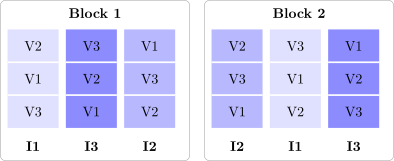

12.2 The split-plot design
Definition 12.2.1. A split-plot design has two sizes of experimental unit. The levels of one factor, the whole-plot factor, are randomised to large units, the whole plots. Each whole plot is then divided into subplots, and the levels of the second factor, the subplot factor, are randomised to the subplots within each whole plot.
The design arises when one factor is hard or expensive to change, or must be applied to large areas. Irrigation must be applied to large areas of a field; varieties can be sown in small strips. An oven’s temperature is slow to change, but several specimens can go into one oven run. Running a fully randomised factorial would mean resetting the hard factor for every run. The split plot accepts a cost instead: the whole-plot factor is compared on fewer, larger units, with a larger error, while the subplot factor and the interaction are compared within whole plots, with a smaller error.
The commonest layout has the whole plots in \(r\) complete blocks. Randomisation has two stages: the \(a\) whole-plot levels are randomised to the \(a\) whole plots in each block, and the \(b\) subplot levels are randomised afresh within each whole plot (Figure 15).

The model
Let \(y_{ijk}\) be the response in block \(i\), whole-plot level \(j\) and subplot level \(k\). The model is \begin {gather*} y_{ijk} = \mu + \rho _i + \tau _j + \delta _{ij} + \beta _k + (\tau \beta )_{jk} + \varepsilon _{ijk} , \\ i = 1, \dots , r , \quad j = 1, \dots , a , \quad k = 1, \dots , b . \end {gather*} Here \(\rho _i\) is the block effect, \(\tau _j\) and \(\beta _k\) the fixed effects of the two factors and \((\tau \beta )_{jk}\) their interaction, with the usual side conditions. The term \(\delta _{ij} \sim N(0, \sigma ^2_\delta )\) is the whole-plot error, the deviation of whole plot \((i, j)\) shared by all its subplots, and \(\varepsilon _{ijk} \sim N(0, \sigma ^2)\) the subplot error; all random terms are independent. The blocks may be fixed or random (\(\rho _i \sim N(0, \sigma ^2_\rho )\)); the tests for the treatment factors are the same either way.
The model contains two error terms because the experiment has two kinds of experimental unit. Two subplots in the same whole plot share \(\delta _{ij}\), so their responses are correlated, with correlation \(\sigma ^2_\delta /(\sigma ^2_\delta + \sigma ^2)\).
The analysis of variance
The sums of squares are those of a three-factor analysis (blocks, \(A\), \(B\)) with one observation per cell, regrouped. The whole-plot error is the block \(\times \) \(A\) interaction, and the subplot error is what is left: \begin {gather*} SS_{\mathrm {WP}} = \frac 1b\sum _{i,j}y_{ij\cdot }^2 - C , \qquad E_a = SS_{\mathrm {WP}} - SS_{\mathrm {Blocks}} - SS_A , \\ E_b = SST - SS_{\mathrm {WP}} - SS_B - SS_{AB} , \end {gather*} where \(SS_{\mathrm {WP}}\) is the sum of squares between the \(ra\) whole-plot totals.
Theorem 12.2.2. In the split-plot model with random blocks, the analysis of variance is
| source | df | \(E(MS)\) |
| blocks | \(r - 1\) | \(\sigma ^2 + b\sigma ^2_\delta + ab\sigma ^2_\rho \) |
| \(A\) | \(a - 1\) | \(\sigma ^2 + b\sigma ^2_\delta + \dfrac {rb\sum \tau _j^2}{a - 1}\) |
| whole-plot error \(E_a\) | \((r - 1)(a - 1)\) | \(\sigma ^2 + b\sigma ^2_\delta \) |
| \(B\) | \(b - 1\) | \(\sigma ^2 + \dfrac {ra\sum \beta _k^2}{b - 1}\) |
| \(AB\) | \((a - 1)(b - 1)\) | \(\sigma ^2 + \dfrac {r\sum \sum (\tau \beta )_{jk}^2}{(a - 1)(b - 1)}\) |
| subplot error \(E_b\) | \(a(r - 1)(b - 1)\) | \(\sigma ^2\) |
So \(A\) is tested against \(MS_{E_a}\), and \(B\) and \(AB\) against \(MS_{E_b}\).
Proof. The whole-plot means are \(\bar y_{ij\cdot } = \mu + \rho _i + \tau _j + \delta _{ij} + \bar \varepsilon _{ij\cdot }\), since the \(\beta _k\) and \((\tau \beta )_{jk}\) average to zero over \(k\). This is a randomised block model for \(a\) treatments with error \(\delta _{ij} + \bar \varepsilon _{ij\cdot }\) of variance \(\sigma ^2_\delta + \sigma ^2/b\). The whole-plot part of the analysis is \(b\) times the randomised block analysis of these means, so its expected mean squares are \(b\) times those of a randomised block design with random blocks and error variance \(\sigma ^2_\delta + \sigma ^2/b\), which gives the first three lines.
Within whole plots, \(y_{ijk} - \bar y_{ij\cdot } = (\beta _k + (\tau \beta )_{jk}) + (\varepsilon _{ijk} - \bar \varepsilon _{ij\cdot })\): the block, the whole-plot level and \(\delta _{ij}\) all cancel. The subplot part of the analysis is therefore a function of the constants \(\beta _k\), \((\tau \beta )_{jk}\) and of the \(\varepsilon \)’s alone, and its expected mean squares are those of a fixed effects analysis with error variance \(\sigma ^2\). □
The proof shows the whole design in two lines. The whole-plot factor is compared using whole-plot means, whose error includes \(\delta _{ij}\), while everything measured within a whole plot is free of \(\delta _{ij}\). Since usually \(\sigma ^2_\delta > 0\), the subplot comparisons are the more precise.
Standard errors of comparisons
Four kinds of comparison arise, with different variances. With \(\bar y_{\cdot jk}\) the mean of treatment combination \((j, k)\) over blocks:
| difference between | variance | estimate |
| two \(A\) means, \(\bar y_{\cdot j\cdot } - \bar y_{\cdot j'\cdot }\) | \(2(\sigma ^2 + b\sigma ^2_\delta )/(rb)\) | \(2MS_{E_a}/(rb)\) |
| two \(B\) means, \(\bar y_{\cdot \cdot k} - \bar y_{\cdot \cdot k'}\) | \(2\sigma ^2/(ra)\) | \(2MS_{E_b}/(ra)\) |
| two \(B\) levels at one \(A\) level | \(2\sigma ^2/r\) | \(2MS_{E_b}/r\) |
| two \(A\) levels at one \(B\) level | \(2(\sigma ^2 + \sigma ^2_\delta )/r\) | \(2[(b - 1)MS_{E_b} + MS_{E_a}]/(rb)\) |
The first three follow from the model as before; for instance in \(\bar y_{\cdot jk} - \bar y_{\cdot jk'}\) the \(\delta _{ij}\) cancel, leaving only subplot errors. In the fourth, \(\bar y_{\cdot jk} - \bar y_{\cdot j'k}\) contains \(\bar \delta _{\cdot j} - \bar \delta _{\cdot j'}\) as well as \(\bar \varepsilon _{\cdot jk} - \bar \varepsilon _{\cdot j'k}\), so its variance is \(2(\sigma ^2_\delta + \sigma ^2)/r\). No single mean square estimates \(\sigma ^2 + \sigma ^2_\delta \), but \[ \frac {(b - 1)MS_{E_b} + MS_{E_a}}b \] does, because \(\sigma ^2_\delta \) has the estimate \((MS_{E_a} - MS_{E_b})/b\). Its degrees of freedom come from Satterthwaite’s formula (Proposition 11.2.3).
Example 12.2.3. Three irrigation schedules (I1 none, I2 moderate, I3 full) and three wheat varieties (V1, V2, V3) were compared in four blocks. In each block, the schedules were randomised to three whole plots, and the varieties to three subplots in each whole plot. Yields (t/ha), with whole-plot totals:
| block | irrigation | V1 | V2 | V3 | total |
| \(1\) | I1 | \(5.5\) | \(5.9\) | \(5.8\) | \(17.2\) |
| I2 | \(6.4\) | \(7.2\) | \(6.9\) | \(20.5\) | |
| I3 | \(6.3\) | \(7.2\) | \(6.3\) | \(19.8\) | |
| \(2\) | I1 | \(4.2\) | \(5.0\) | \(4.3\) | \(13.5\) |
| I2 | \(4.8\) | \(5.8\) | \(4.9\) | \(15.5\) | |
| I3 | \(6.6\) | \(8.0\) | \(6.9\) | \(21.5\) | |
| \(3\) | I1 | \(5.2\) | \(5.8\) | \(4.9\) | \(15.9\) |
| I2 | \(6.1\) | \(6.5\) | \(5.8\) | \(18.4\) | |
| I3 | \(6.4\) | \(7.6\) | \(6.3\) | \(20.3\) | |
| \(4\) | I1 | \(4.4\) | \(5.1\) | \(4.8\) | \(14.3\) |
| I2 | \(5.6\) | \(6.3\) | \(5.6\) | \(17.5\) | |
| I3 | \(6.2\) | \(7.1\) | \(5.9\) | \(19.2\) |
The totals are: blocks \(57.5\), \(50.5\), \(54.6\), \(51.0\); irrigation \(60.9\), \(71.9\), \(80.8\); varieties \(67.7\), \(77.5\), \(68.4\); grand total \(213.6\), with \(\sum y^2 = 1298.00\), so \(C = 213.6^2/36 = 1267.36\). Then \begin {gather*} SST = 30.640 , \qquad SS_{\mathrm {Blocks}} = 3.602 , \qquad SS_I = 16.562 , \\ SS_{\mathrm {WP}} = \frac {17.2^2 + 20.5^2 + \dots + 19.2^2}3 - C = 24.547 , \\ E_a = 24.547 - 3.602 - 16.562 = 4.383 , \\ SS_V = 4.982 , \qquad SS_{IV} = 0.467 , \\ E_b = 30.640 - 24.547 - 4.982 - 0.467 = 0.645 . \end {gather*}
| source | SS | df | MS | \(F_0\) |
| blocks | \(3.602\) | \(3\) | \(1.201\) | \(1.64\) |
| irrigation | \(16.562\) | \(2\) | \(8.281\) | \(11.34\) |
| whole-plot error | \(4.383\) | \(6\) | \(0.7305\) | |
| varieties | \(4.982\) | \(2\) | \(2.491\) | \(69.5\) |
| irrigation \(\times \) varieties | \(0.467\) | \(4\) | \(0.1167\) | \(3.26\) |
| subplot error | \(0.645\) | \(18\) | \(0.0358\) | |
| total | \(30.640\) | \(35\) |
Irrigation is significant against the whole-plot error (\(F_{0.05, 2, 6} = 5.14\), \(P = 0.009\)). Varieties (\(F_{0.05, 2, 18} = 3.55\), \(P < 0.0001\)) and the interaction (\(F_{0.05, 4, 18} = 2.93\), \(P = 0.036\)) are significant against the subplot error. The whole-plot error mean square is \(20\) times the subplot one, and \(\hat \sigma ^2_\delta = (0.7305 - 0.0358)/3 = 0.232\) against \(\hat \sigma ^2 = 0.036\): whole plots vary much more than subplots within them.
The means are
| V1 | V2 | V3 | mean | |
| I1 | \(4.83\) | \(5.45\) | \(4.95\) | \(5.08\) |
| I2 | \(5.73\) | \(6.45\) | \(5.80\) | \(5.99\) |
| I3 | \(6.38\) | \(7.48\) | \(6.35\) | \(6.73\) |
| mean | \(5.64\) | \(6.46\) | \(5.70\) | \(5.93\) |
and the standard errors of a difference are \(\sqrt {2(0.7305)/12} = 0.349\) for two irrigation means, \(\sqrt {2(0.0358)/12} = 0.077\) for two variety means, \(\sqrt {2(0.0358)/4} = 0.134\) for two varieties under the same irrigation, and \(\sqrt {2[2(0.0358) + 0.7305]/12} = 0.366\) for two irrigation levels with the same variety. V2 is the best variety under every schedule, and its advantage grows with water (\(0.6\), \(0.7\), \(1.1\) t/ha over V1): that is the interaction.
Had the data been analysed as a randomised block design with nine treatments, the two errors would have been pooled into one mean square, \((4.383 + 0.645)/24 = 0.209\), and irrigation would have had \(F_0 = 8.281/0.209 = 39.5\) on \(24\) degrees of freedom. That overstates the evidence about irrigation, which has only \((r - 1)(a - 1) = 6\) degrees of freedom of genuine replication, and understates the precision of the variety comparisons.
Remark. Variants of the design follow the same logic. The whole plots may be in a completely randomised design rather than in blocks; the whole-plot error is then the variation between whole plots treated alike. A split-split-plot divides the subplots again, adding a third error. In a strip-plot the second factor is also applied in strips, across the blocks at right angles to the first, and there are three errors: one for each factor and one for the interaction.
Questions on this section
Stuck on something here? Ask below and it stays attached to this topic.